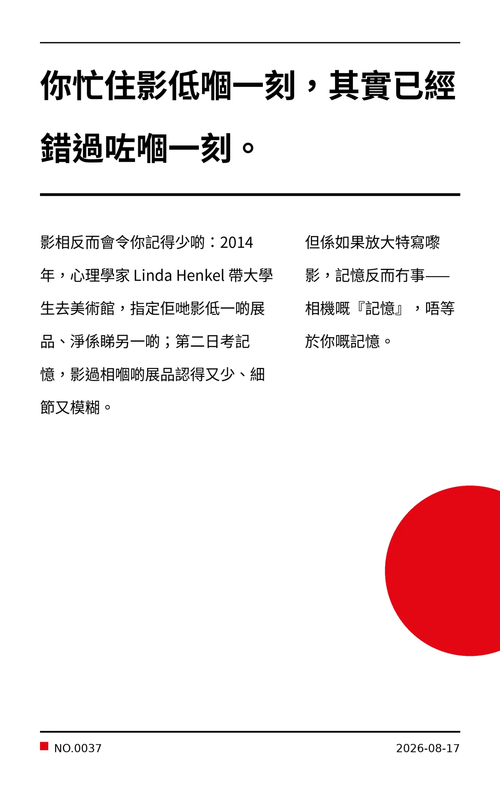

你忙住影低嗰一刻，其實已經錯過咗嗰一刻。
影相反而會令你記得少啲：2014 年，心理學家 Linda Henkel 帶大學生去美術館，指定佢哋影低一啲展品、淨係睇另一啲；第二日考記憶，影過相嗰啲展品認得又少、細節又模糊。但係如果放大特寫嚟影，記憶反而冇事——相機嘅『記憶』，唔等於你嘅記憶。
bf3205f77b7084bd
冷知识由执笔的模型自行查证。逐条断言、来源与所引原句存档在纯文字副本里，未经程序逐字校验，留作事后核实。